Biography
Hi there! My name is Felicia. Nice to meet ya! Here's a little bit about myself.
Art
Ever since I can remember, I have loved art. When I was little, my favorite pass time was drawing. I would always draw and to this day we have boxes full of drawings and crafts my mother could never throw away. Art has always been a part of my life. Throughout my childhood and late adolescence, I completed about six hours of figure skating training and 9 hours of synchronized swimming training every week. I became a perfectionnist and a high achiever, thanks to this. Everything I do has to be near perfect, otherwise it doesn't meet my standards. In competition, I would accept nothing but a gold medal so if I didn't get it, I worked even more for the next comeptition. This principle applied for almost every other aspect of my life so far and especially for my art. Drawings, crafts, and creations I make need to meet a certain standard for me to be happy with the final result, so I work very hard on my projects!
Works
For a large part of my life, I've always drawn using traditional tools. Pencil and paper were my best friends. I enventually picked up acrylic painting as well, but did not get as good with that. Recently, I received a digital drawing tablet for my birthday and it has changed art and drawing for me forever. I can draw, paint, sculpt in 3D, use models, and manipulate dolls for perfect references; it is the best gift I've ever received in my life! I have a long way to go until I reach the level of my favorite digital artists, but I am pretty proud of the stuff I've made so far!

 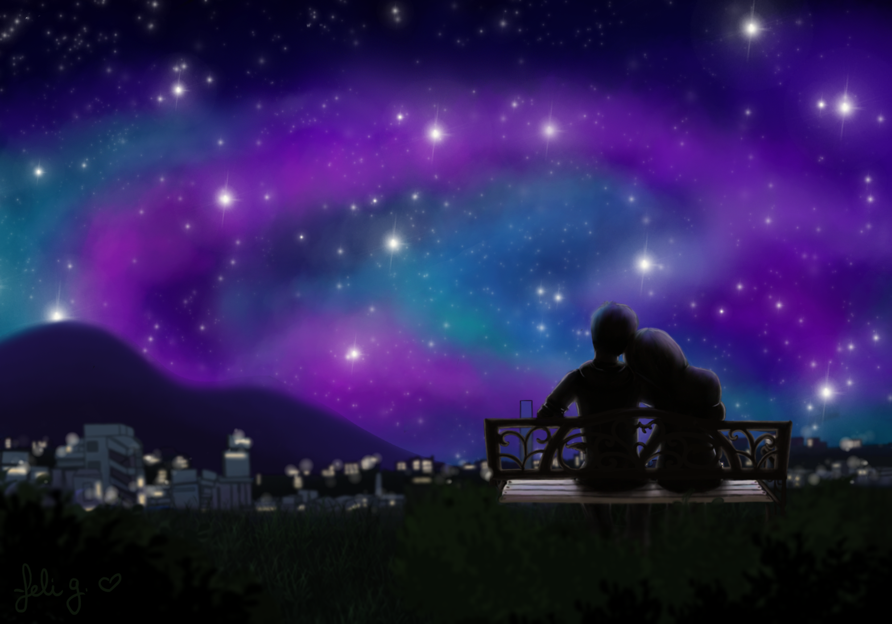
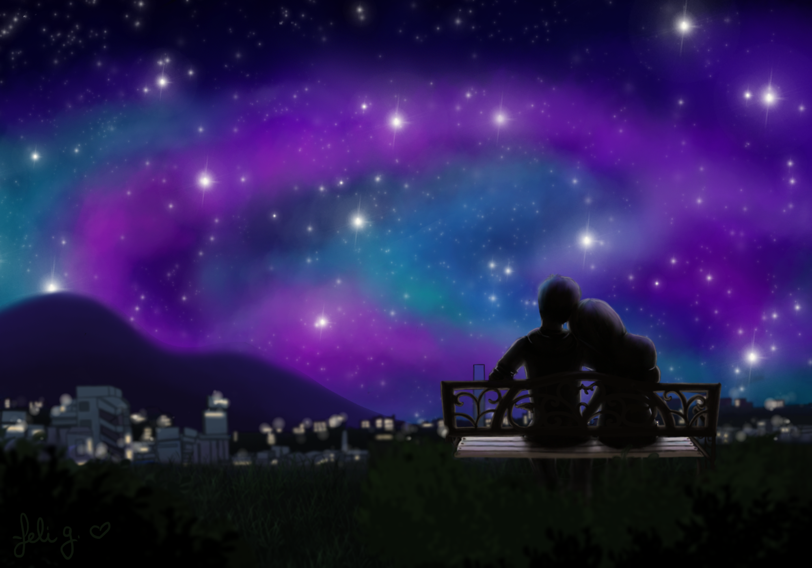
 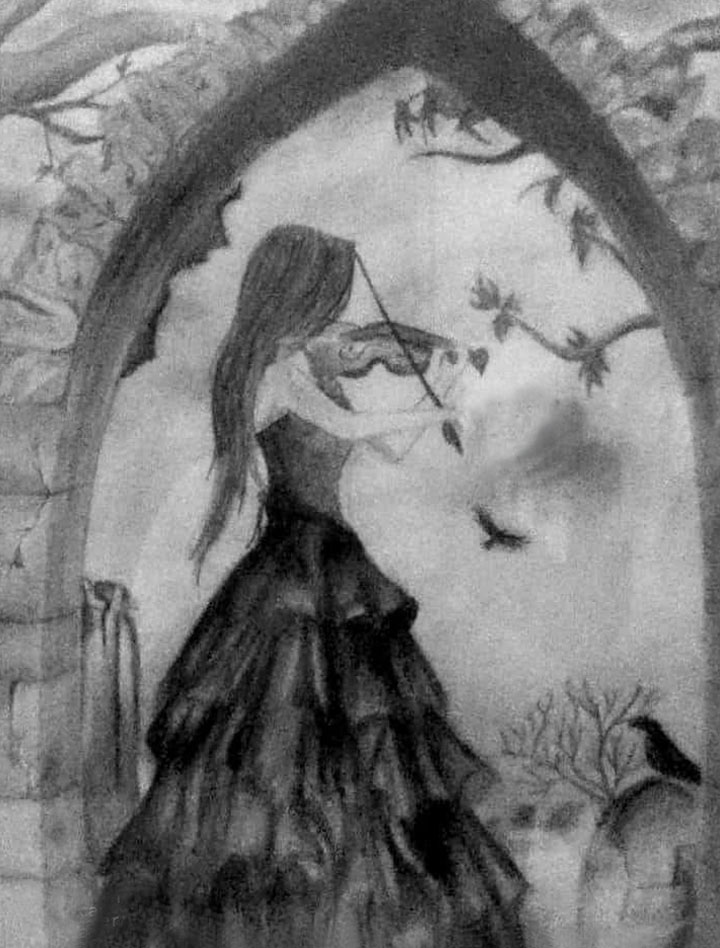
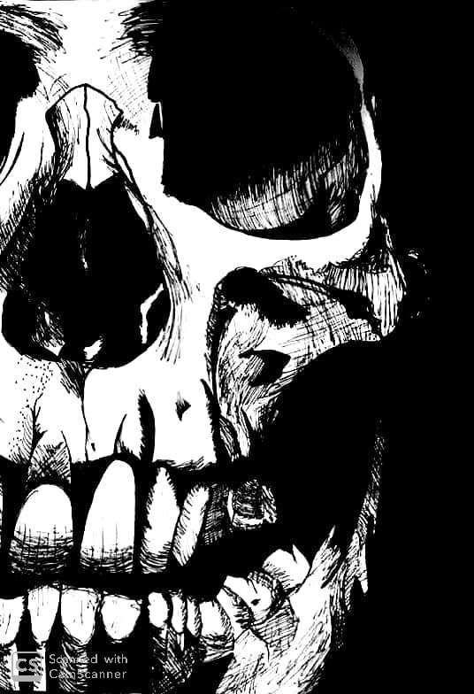
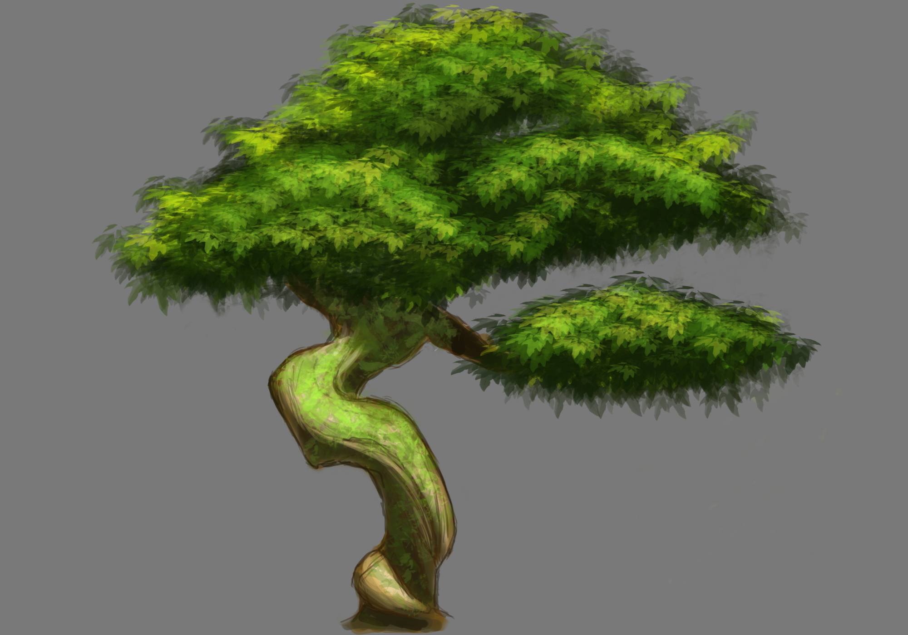
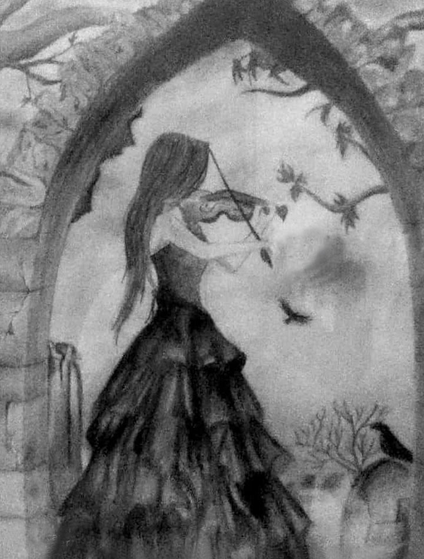
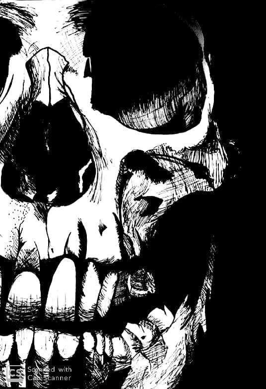
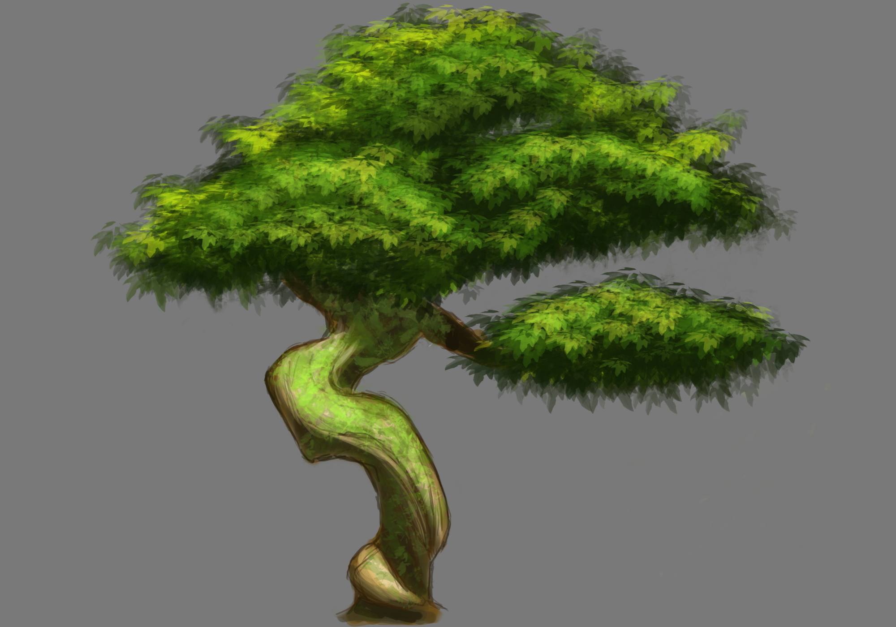
Hobbies
I have many hobbies. My hobbies are all things I love and I'm passionate about, and they are all things that make me very happy and relax me in my free time. I love to cook, dance, play video games, and cosplay!
I really love food, so I love to try new recipes and make good food for my family and the people I love. I especially enjoy asian food!
Dancing recently became a really big part of my life. It's a way for me to spend time with my best friend and share an activity we both really enjoy. We created a small duet called Lumi together, and I spend a lot of time learning choreographies,
filming videos, editing pictures and creating our brand!
My favorite video games are first person shooters like Halo (I grew up with that game), adventure like the Arkham series, and strategy games like Age of Mythology or League of Legends!
I'm not sure where my love for cosplay comes from, but it's one of the things I enjoy the most. Spending time on creating my costumes and props brings me a lot of joy, and I cannot describe the feeling of putting together all the pieces and wearing the final product
at conventions, having pictures taken and people enjoy your creation. I love to change my appearance and I love to bring my favorite characters to life, it is a truly unique experience that doesn't compare to anything else and it makes me happy!
 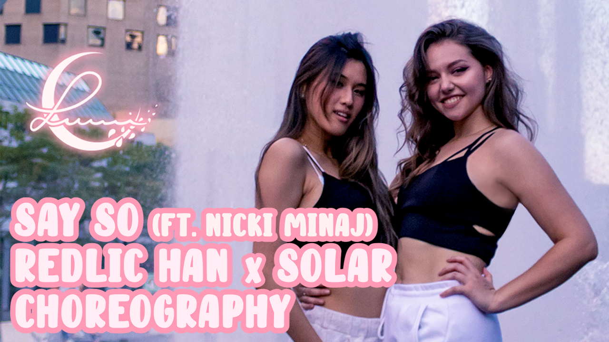
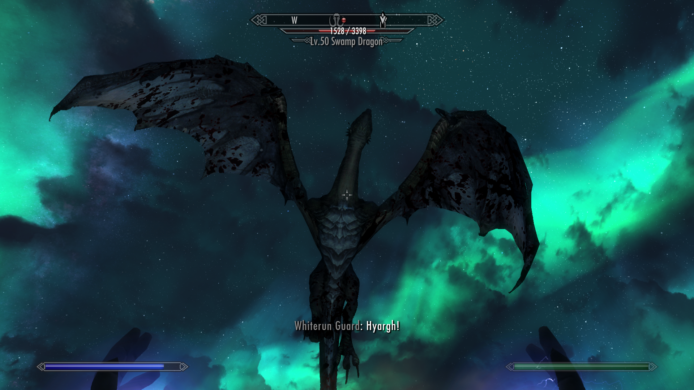
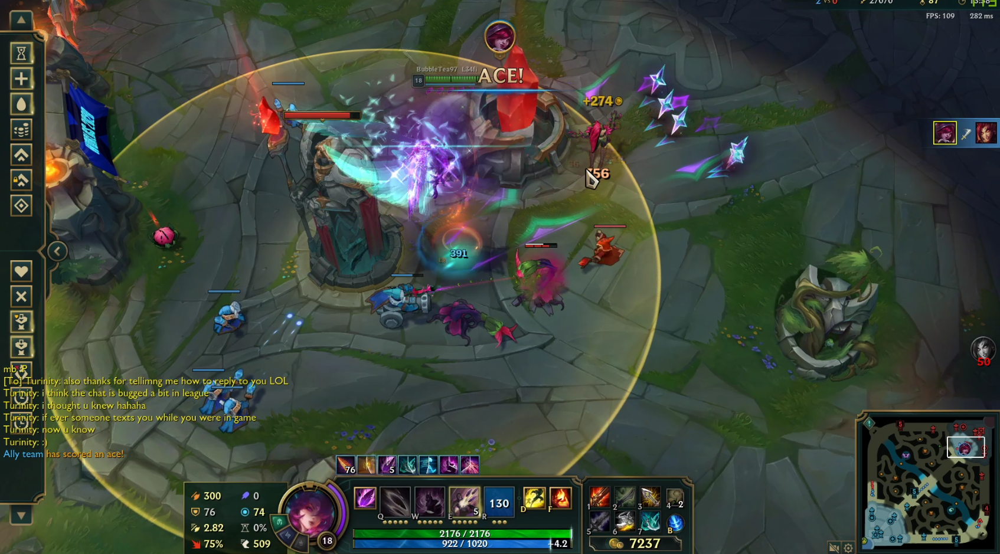
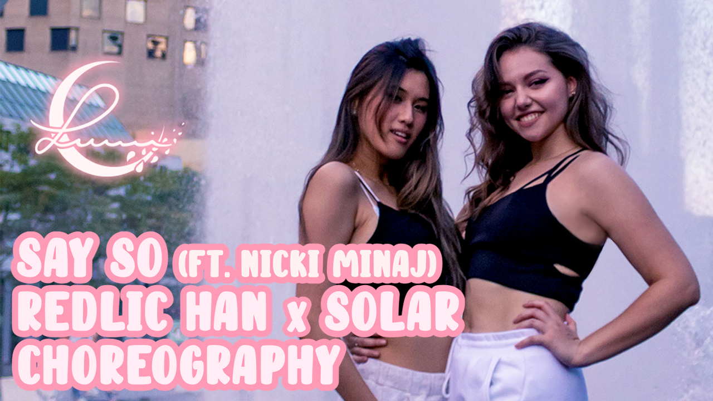
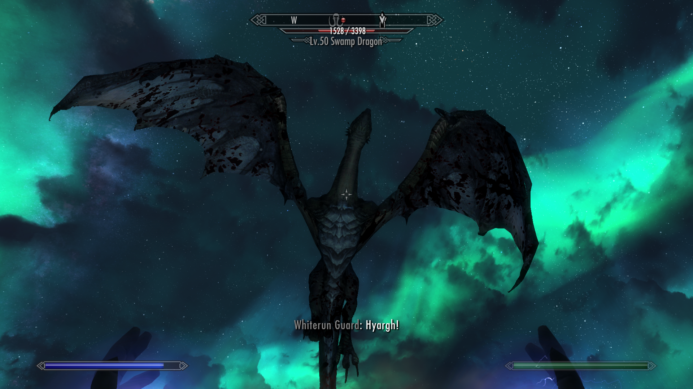
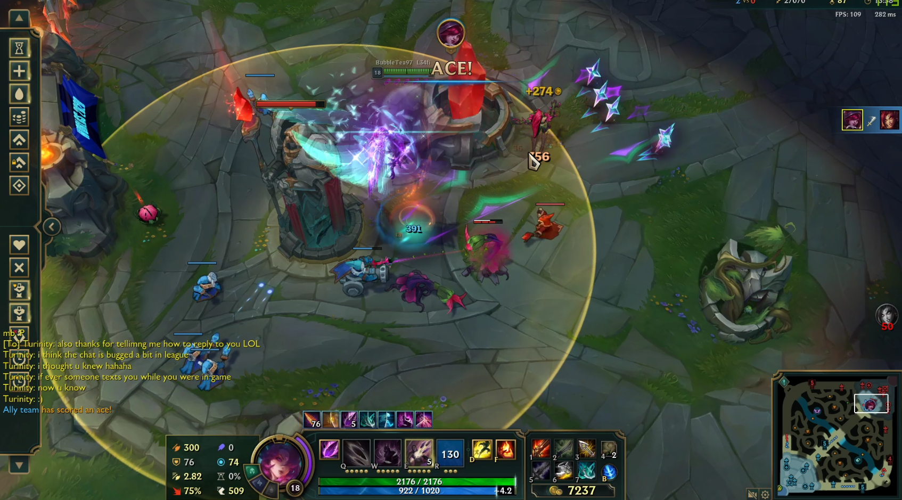